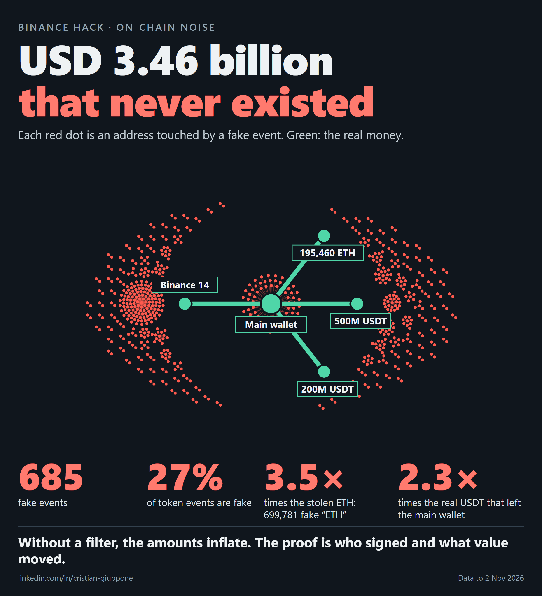
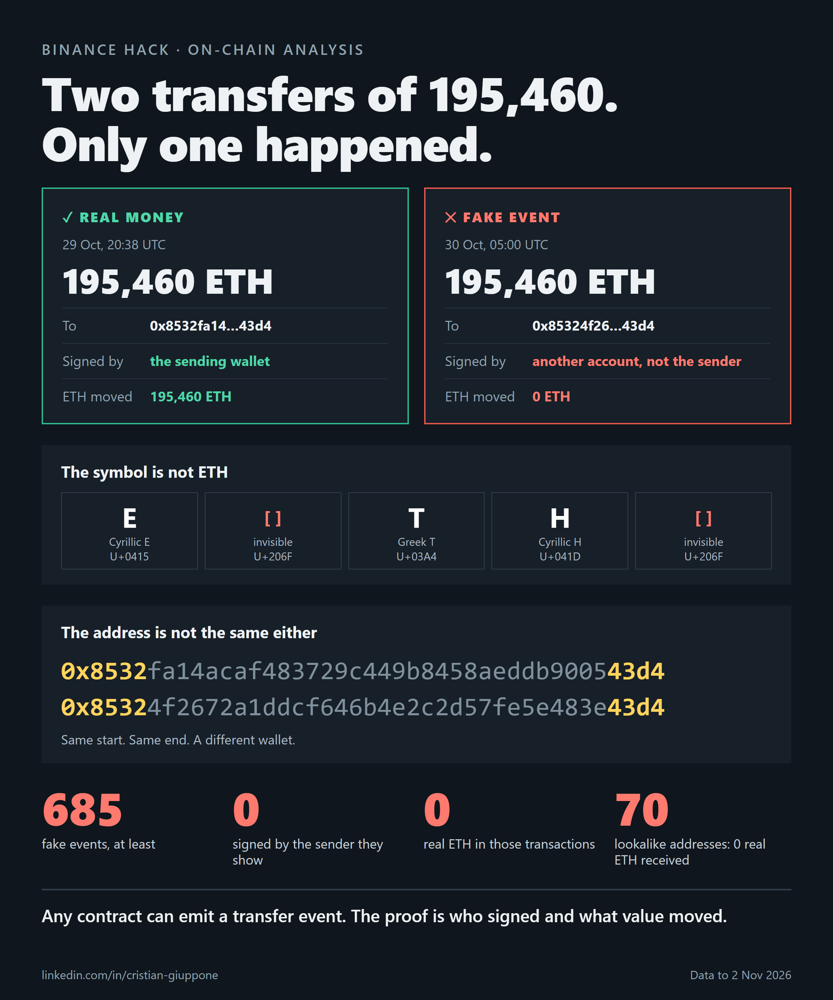
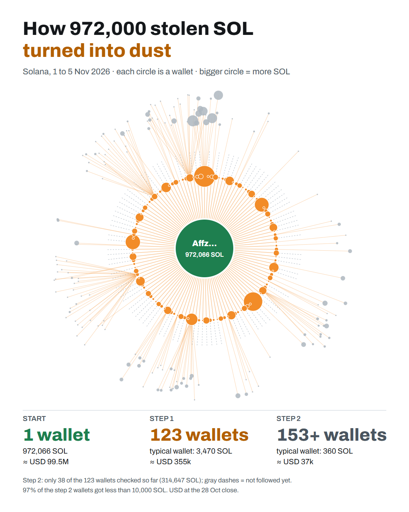
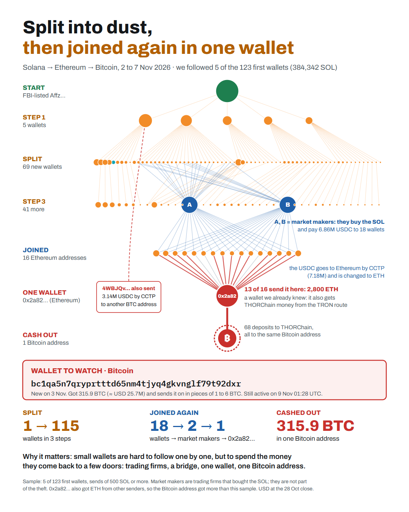

Which wallets the money left, where it went, and which published facts hold up when we check them with public data.
Author: Cristian Giuppone
What this work is and is not. It is an exercise in money-flow analysis, made only with public blockchain data. It describes movements that anyone can check.
It does not identify people. Any names or labels about who did it come from the FBI, TRM Labs and Chainalysis, not from this work. A flagged address does not mean a guilty person. The case is still open and the amounts may change.
TRM Labs reported the theft of more than USD 6,300 million, and the FBI published 628 linked addresses. Other sources added figures and routes in the following days. This work takes 48 of those claims and compares each one with the public transactions on 10 networks: Ethereum, Bitcoin, TRON, Solana, XRP Ledger, Arbitrum, Optimism, Base, Avalanche and Polygon.
Our own total is USD 6,396 million, against USD 6,400 million from Chainalysis. Most claims match almost to the decimal. A few are contradicted or not confirmed: section 10 lists them. The raw data also hides a trap: at least 685 fake events that, without a filter, look like USD 3,460 million.
This is one real route of the money, not the total. Each step opens the transaction in the explorer, so you can check it.
Passing through a wallet does not prove who controls it. Another 197,460 ETH go from 0x5227…2f8c to 0x8532…43d4, also on the FBI list, with no outflows at the cut-off.
The FBI published where the money ended up, not the path it took. We checked every one of the 608 FBI addresses on Ethereum: all of them were created after the hack, and they only receive. USD 1,300 million came in; only USD 111 thousand went out.
| NETWORK | PATH | WHAT WE SEE |
|---|---|---|
| Bitcoin | Direct | 11 Binance wallets → 19 FBI addresses. All 19 destinations are on the list. 18,270 BTC not spent. |
| Solana | Direct | 1 Binance wallet → 1 FBI address. It is the only FBI deposit that has started to move: on 1 and 2 Nov it sent 485,277 SOL to Eze86… and 71,915 SOL to 16 addresses; from 3 Nov 01:37 to 4 Nov 02:24 it sent 419,898 SOL to 74 addresses. Corrected 6 Nov |
| Ethereum | With hops | 3 Binance wallets → 2 receiver wallets, not on the list → hops → FBI deposits. Of the 84 destinations of USD 10k or more of the main receiver, only 2 are on the FBI list. |
| TRON | Crosses to Ethereum | Binance-Hot 7 → TRON receiver → distributor → 2 layers of wallets → THORChain → Ethereum wallets that pay FBI deposits. |
| XRP and other EVM | No FBI addresses | The FBI did not publish addresses on these networks. We followed them from the Binance wallets. |
We looked at who sent money into the 608 FBI addresses. 176 senders sent USD 100 thousand or more each, and none of them is on the list. Most of them are steps of the attacker's own route.
| WHERE THEIR MONEY CAME FROM | WALLETS | SENT TO FBI ADDRESSES | HOPS FROM BINANCE |
|---|---|---|---|
| They are the receiver wallets | 2 | USD 524M | 1 |
| Straight from a receiver wallet (fast sale and other hops) | 10 | USD 468M | 2 |
| From the route, through an Aave loan or a chain of new wallets | 2 | USD 200M | 4 to 7 |
| THORChain payments | 27 | USD 20M | — |
| ETH bought on a DEX or aggregator (Bitget, CoW and others) | 56 | USD 35M | — |
| Funding not traced | 79 | USD 49M | — |
The longest path: main receiver → hop 0x0ddf… → Aave borrower 0x8d53… → 0x77ed… → 0x7aa4… → 0xccbe… → 0xb171… → FBI deposit 0x897c…, USD 136M. The 79 untraced wallets may belong to the attacker or may be services used by many people. That is why we say "received funds", not "suspect".
Each THORChain payment carries a memo with the hash of the transfer that started it. We read that memo in 1,289 payments (11,409 ETH, about USD 26.9M) that reach wallets that pay FBI deposits. Every one of them leads back to a transfer from one of 42 wallets on the TRON route of the stolen money. This proves on-chain that money stolen on TRON ended in FBI deposits on Ethereum.
Times in UTC, 29 Oct 2026 unless another date is given.
| TIME | WHAT HAPPENS | PROOF |
|---|---|---|
| ≈ 36.7 h before | First of 3 withdrawals of 0.1 ETH to the operator | Open |
| 02:28:59 | First contract creation reported by Hypernative | Open |
| 13:51 | The account starts to send smaller type 4 transactions | — |
| 20:05 to 20:09 | Five wallets labeled Binance send 233,461,943 XRP to rK21t6… | Open |
| 20:10 | 965,455.1 SOL arrive in a single transaction | Open |
| 20:16 to 23:05 | The same main receiver gets Binance funds on Arbitrum, Optimism, Base, Avalanche and Polygon: about USD 80M | Open |
| 20:20:59 | Type 4 transaction with 50 authorizations | Open |
| 20:22:45 | 612.73M USDT reach TG5iBM… on TRON | Open |
| 20:24:23 | Main drain of Binance 14 | Open |
| 20:57 to 21:00 | 60M USDT go into Aave and 19,762.4 ETH of debt come out | Open |
| 21:01:35 | Tether freezes 971.1M USDT in the main wallet | Open |
| 21:04:59 | Circle freezes 823.0M USDC | Open |
| 22:00:59 | Ripple blocks 40.54M RLUSD | Open |
| 22:10:35 | World Liberty blocks 27.82M USD1 | Open |
| 30 Oct, 00:18 | On Arbitrum, 8,426 ETH and 74.56M ARB move to 0x…0da0. TRM says the Security Council made this move | Open |
| 1 Nov, 05:33 | Last of the 1,113 transfers of TRBdWq… | Open |
| 1 Nov, 09:38 to 09:39 | Affz… sends 485,277 SOL to Eze86… Added 6 Nov | Open |
| 1 Nov 10:09 to 2 Nov 15:43 | Affz… sends 71,915 SOL to 16 addresses (not drawn in the graph) Added 6 Nov | Open |
| 2 Nov, 03:47 to 04:00 | rK21t6… splits the XRP into six new wallets | Open |
| 3 Nov, 17:46 to 17:48 | Eze86… sends 240,043 SOL back to Affz…, an FBI address | Open |
| 3 Nov 01:37 to 4 Nov 02:24 | Affz… sends 419,898 SOL to 74 addresses, in many small transfers | Open |
A pattern is a signal that justifies a closer look. On its own, it is not proof.
Balances read on each chain on 4 Nov 2026 02:01 UTC. No data identifies a person.
Stolen is what left Binance. Frozen is what the issuer blocked. Idle is what is still in traced wallets and nobody can freeze. What already left went to services, pools or other coins.
| ASSET | STOLEN | FROZEN | % FROZEN | IDLE, NOT FROZEN | ALREADY LEFT | WHO CAN FREEZE |
|---|---|---|---|---|---|---|
| ETH | 200,630 | 0 | 0.0% | 568,405 | More ETH than was stolen: ETH was bought with USDT and borrowed | Nobody: native coin |
| USDT | 2,488.2M | 1,759.2M | 70.7% | 0.0M | 729.0M | Tether |
| USDC | 823.3M | 824.1M | 100.0% | 0 | Nothing | Circle |
| RLUSD | 88.5M | 40.5M | 45.8% | 0 | 48.0M | Ripple |
| BTC | 18,270.2 | 0 | 0.0% | 18,270.2 | Nothing | Nobody: native coin |
| TRX | 46.4M | 0 | 0.0% | 0.0M | 46.4M | Nobody: native coin |
| XRP | 233.46M | 0 | 0.0% | 233.46M | Nothing | Nobody: native coin |
| SOL | 970,565 | 0 | 0.0% | 492,647 | 477,918, most of it on 3 and 4 Nov | Nobody: native coin |
| USD1 | — | 27.8M | — | 0 | Nothing | World Liberty |
| Total, USD approx. | 2,651.6M | 3,184.5M | Approximate prices: close of 28 Oct | |||
Each wallet with more than USD 1M; the rest, added up by network. The name opens the wallet in the explorer.
| WALLET | NETWORK | ASSET | BALANCE | USD APPROX. | STATUS | FBI LIST |
|---|---|---|---|---|---|---|
| Main receiver 0x5227… | Ethereum | USDT | 1,175.5M | 1,175.5M | Frozen by Tether | No |
| Main receiver 0x5227… | Ethereum | USDC | 823.0M | 823.0M | Frozen by Circle | No |
| TRON receiver | TRON | USDT | 312.7M | 312.7M | Frozen by Tether | No |
| 0xaa246b…54a0 | Ethereum | USDT | 175.0M | 175.0M | Frozen by Tether | No |
| TCzBTkqn…7Y62 | TRON | USDT | 66.0M | 66.0M | Frozen by Tether | No |
| Frozen RLUSD 0xe702… | Ethereum | RLUSD | 40.5M | 40.5M | Frozen by Ripple | No |
| 0xb171ca…c8c3 | Ethereum | USDT | 30.0M | 30.0M | Frozen by Tether | No |
| Main receiver 0x5227… | Ethereum | USD1 | 27.8M | 27.8M | Frozen by World Liberty | No |
| 3 other addresses | Ethereum | USDC | 1.1M | 1.1M | Frozen by Circle | No |
| Deposit 0x8532fa…43d4 | Ethereum | ETH | 197,460 | 465.5M | Free | Yes |
| Deposit 0xc887af…286a | Ethereum | ETH | 137,602 | 324.4M | Free | Yes |
| Deposit 0x897c80…8df3 | Ethereum | ETH | 78,415 | 184.9M | Free | Yes |
| Deposit 0x54401f…c942 | Ethereum | ETH | 40,601 | 95.7M | Free | Yes |
| 610 other addresses | Ethereum | ETH | 38,753 | 91.4M | Free | Some |
| bc1qxrxu…968s | Bitcoin | BTC | 1,000.0 | 81.3M | Free | Yes |
| bc1qepc7…4lag | Bitcoin | BTC | 1,000.0 | 81.3M | Free | Yes |
| bc1qdfhm…88gw | Bitcoin | BTC | 1,000.0 | 81.3M | Free | Yes |
| bc1qnq6j…8t3s | Bitcoin | BTC | 1,000.0 | 81.3M | Free | Yes |
| bc1q0ts8…mfv3 | Bitcoin | BTC | 1,000.0 | 81.3M | Free | Yes |
| bc1q42fl…lsyx | Bitcoin | BTC | 1,000.0 | 81.3M | Free | Yes |
| bc1qz8hd…updp | Bitcoin | BTC | 1,000.0 | 81.3M | Free | Yes |
| bc1q2wvz…znn6 | Bitcoin | BTC | 1,000.0 | 81.3M | Free | Yes |
| bc1qm2j6…jaat | Bitcoin | BTC | 1,000.0 | 81.3M | Free | Yes |
| bc1qalwn…tca8 | Bitcoin | BTC | 1,000.0 | 81.3M | Free | Yes |
| bc1qjwdw…nz7w | Bitcoin | BTC | 1,000.0 | 81.3M | Free | Yes |
| bc1qs3ae…7s56 | Bitcoin | BTC | 1,000.0 | 81.3M | Free | Yes |
| bc1q63qr…sjxp | Bitcoin | BTC | 1,000.0 | 81.3M | Free | Yes |
| bc1qs6xn…7w3v | Bitcoin | BTC | 1,000.0 | 81.3M | Free | Yes |
| bc1qg3nr…3t53 | Bitcoin | BTC | 1,000.0 | 81.3M | Free | Yes |
| bc1qf5cy…a35u | Bitcoin | BTC | 1,000.0 | 81.3M | Free | Yes |
| bc1qm8v8…s2l8 | Bitcoin | BTC | 1,000.0 | 81.3M | Free | Yes |
| Deposit 0x79e70d…544a | Ethereum | ETH | 34,280 | 80.8M | Free | Yes |
| bc1qrg02…6zyt | Bitcoin | BTC | 832.5 | 67.7M | Free | Yes |
| XRP split 1 | XRP | XRP | 40.00M | 53.0M | Free | No |
| XRP split 2 | XRP | XRP | 40.00M | 53.0M | Free | No |
| XRP split 3 | XRP | XRP | 40.00M | 53.0M | Free | No |
| XRP split 4 | XRP | XRP | 40.00M | 53.0M | Free | No |
| XRP split 5 | XRP | XRP | 40.00M | 53.0M | Free | No |
| XRP split 6 | XRP | XRP | 33.46M | 44.3M | Free | No |
| Deposit 0x03b0ee…20ea | Ethereum | ETH | 17,260 | 40.7M | Free | Yes |
| bc1qxg0l…s9ra | Bitcoin | BTC | 437.7 | 35.6M | Free | Yes |
| Collector AffzFDKZ…BEaU | Solana | SOL | 247,413 | 25.3M | Free | Yes |
| Deposit Eze86Ngj…DrrD | Solana | SOL | 245,234 | 25.1M | Free | No |
| Collector 0x8d4b8e…9e19 | Ethereum | ETH | 9,788 | 23.1M | Free | No |
| 0x294828…a0ed | Ethereum | ETH | 7,243 | 17.1M | Free | Yes |
| Deposit 0xc2096a…850a | Ethereum | ETH | 7,003 | 16.5M | Free | No |
| 2 other addresses | XRP | XRP | 0.00M | 0.0M | Free | No |
| 3 other addresses | TRON | TRX | 0.0M | 0.0M | Free | No |
| 2 other addresses | TRON | USDT | 0.0M | 0.0M | Free | No |
| 1 other addresses | Ethereum | USDT | 0.0M | 0.0M | Free | Yes |
Yes, any day. The wallet Affz…, which is on the FBI list, started to send on 1 Nov. From 01:37 UTC on 3 Nov to 02:24 UTC on 4 Nov, 419,898 SOL left it to 74 addresses. Corrected 6 Nov 41,759 SOL of them left after the balances above were read at 02:01. In the middle, at 17:48 on 3 Nov, the second deposit Eze86… sent 240,043 SOL back to it. Flagging a wallet does not block it: the FBI list and the explorer labels warn exchanges, which can hold a deposit when it arrives. That is why we read these balances again every day and compare them with the day before.
Addresses are not blocked: tokens are. USDT, USDC, RLUSD and USD1 have an issuer, and their contract has a blacklist that the issuer controls. ETH, BTC, SOL, TRX and XRP are the native coins of their networks and have no issuer: nobody can freeze them. That is why a frozen wallet can still move its ETH, and why the USDT was sold before 21:01.
Services that received funds from traced addresses. The tracing stops here, because the money mixes with other users' money. These services are not accused of anything.
| SERVICE | NETWORK | USD APPROX. | ADDRESS |
|---|---|---|---|
| Unnamed TRON contract | TRON | 199.0M | TSUUVjys…vZpx |
| Aave aUSDT | Ethereum | 60.0M | 0x238789…086a |
| LI.FI | Ethereum | 50.0M | 0x1231de…4eae |
| TRON PoolManager | TRON | 33.0M | TVjuTE3V…u1Br |
| Uniswap V4 | Ethereum | 19.5M | 0x000000…8a90 |
Eight tabs: summary, drain and destination by network, the path to the FBI list, preparation, funds by wallet, third-party leads, fake events and the contrast table. Each tab has its graph, the detail by wallet and the evidence with links. The network selector filters the graphs and the tables.
Fake events do not move money, but they do dirty the data. 27% of the token events of the traced wallets are fake.
They fake 699,781 "ETH", 3.5 times the stolen ETH. In the main wallet there are 1,600M fake "USDT" against 700M real USDT that left it.

The sources do not tell us who sent them or why. They are often used so that someone copies a similar address. Here, no look-alike address received real ETH.
A quick reading suggested 34,520 ETH sent by mistake to a look-alike address. It was 0 ETH. The issuer shown signed none of the 685 events.

| ID | SOURCE | PUBLISHED | MEASURED | DIFF. | STATUS | PROOF |
|---|---|---|---|---|---|---|
| T01 | TRM | Ether stolen on Ethereum200,630 ETH | 200,630.0 ETH: 172,624.4 from Binance 14 and 28,005.6 from Binance 16 | 0.0% | confirmed on-chain | Open |
| T02 | TRM | USDT stolen on Ethereum1,875,000,000 USDT | 1,875.46M USDT | +0.02% | confirmed on-chain | Open |
| T03 | TRM | USDC stolen on Ethereum823,000,000 USDC | 823.28M USDC | +0.03% | confirmed on-chain | Open |
| T04 | TRM | RLUSD stolen on Ethereum88,500,000 RLUSD | 88.54M RLUSD | +0.05% | confirmed on-chain | Open |
| T05 | TRM | Main Ethereum sweep167,464 ETH | 167,464.2 ETH in one transaction | 0.0% | confirmed on-chain | Open |
| T06 | TRM | Main sweep in USDT1,615,000,000 USDT | 1,615.41M USDT in the same transaction | +0.03% | confirmed on-chain | Open |
| T07 | TRM | Bitcoin stolen18,270 BTC | 18,270.2 BTC, not spent at the cut-off | 0.0% | confirmed on-chain | Open |
| T08 | TRM | USDT stolen on TRON612,700,000 USDT | 612.73M USDT to TG5iBM…, 20:22:45 UTC | 0.0% | confirmed on-chain | Open |
| T09 | TRM | TRX stolen46,400,000 TRX | 46.39M TRX: a test of 10,000 and the rest 72 seconds later | 0.0% | confirmed on-chain | Open |
| T10 | TRM | XRP stolen233,460,000 XRP | 233,461,943 XRP in 5 payments from 20:05 to 20:09 UTC to rK21t6…The 5 source wallets carry the Binance label on XRPSCAN | 0.0% | confirmed on-chain | Open |
| T11 | TRM | SOL stolen970,500 SOL | 970,564.6 SOL965,455.1 SOL arrive in a single transaction at 20:10 UTC | +0.01% | confirmed on-chain | Open |
| T12 | TRM | Arbitrum, Optimism and Base39,000,000 USD | USD 40.7M: Arbitrum 32.7M (74.56M ARB and 8,426 ETH), Optimism 5.0M (44.23M OP) and Base 3.0M (4.74M VIRTUAL)The same receiver 0x5227… on all three networks. Close price of 28 Oct. Base was read on the Basescan page: there is no free API | +4% | confirmed on-chain | Open |
| T13 | TRM | Avalanche28,000,000 USD | USD 28.7M: 2.26M AVAX and 8.41M USDT from 5 wallets, from 20:33 to 23:04The AVAX left in several hops. The 8.41M USDT are still in the receiver, frozen by Tether (read on 4 Nov) | +2.5% | confirmed on-chain | Open |
| T14 | TRM | Polygon10,000,000 USD | USD 10.5M: 46.63M POL and 6.19M USDT from Binance 48, at 23:05:55Nothing left the receiver on Polygon. The USDT is frozen by Tether; the POL is free (read on 4 Nov) | +5% | confirmed on-chain | Open |
| T15 | TRM | USDT sold for ETH through intent contracts325,000,000 USDT | 325.0M USDT leave 0x9749 between 20:34 and 20:49 | 0.0% | confirmed on-chain | Open |
| T16 | TRM | ETH received for that sale122,300 ETH | 122,316 ETH received; 122,310 go to the depositImplied price ≈ USD 2,657 per ETH | +0.01% | confirmed on-chain | Open |
| T17 | TRM | USDT deposited on Aave60,000,000 USDT | 60.0M USDT: 10M at 20:57 and 50M at 21:00 | 0.0% | confirmed on-chain | Open |
| T18 | TRM | ETH borrowed from Aave19,760 ETH | 19,762.4 ETH of debt on Aave | +0.01% | confirmed on-chain | Open |
| T19 | TRM | USDT deposited on JustLend300,000,000 USDT | 300M reach TPBkSj…; only 10,000 USDT go straight to JustLend234M go to pools and 65.99M stay frozen. Elliptic also describes a swap to TRX on SunSwap | −99.99% direct | contradicted | Open |
| T20 | TRM | USDT moved through hops to Uniswap200,000,000 USDT | 200M do go through hops; ≈ 110M reach pools, 60M Aave and 30M end up frozenThe pools were not broken down by protocol | −45% | partial | Open |
| T21 | TRM | Total frozen by Tether1,770,000,000 USDT | 1,759.2M in 5 wallets on the route: 1,380.5M on Ethereum and 378.7M on TRON | −0.6% | confirmed on-chain | Open |
| T22 | TRM | Tether froze in the main receiver971,100,000 USDT | 971.1M: balance when frozen, 21:01:35 UTC | 0.0% | confirmed on-chain | Open |
| T23 | TRM | Later balance of the main receiver, frozen1,175,000,000 USDT | 1,175.47M USDT, frozen balance204.3M arrived after the freeze | 0.0% | confirmed on-chain | Open |
| T24 | TRM | Tether froze in two TRON wallets378,700,000 USDT | 378.72M: 312.73M in TG5iBM… and 65.99M in TCzBTk… | 0.0% | confirmed on-chain | Open |
| T25 | TRM | Circle froze823,000,000 USDC | 823.0M USDC, 21:04:59 UTC | 0.0% | confirmed on-chain | Open |
| T26 | TRM | Ripple froze40,500,000 RLUSD | 40.54M RLUSD, 22:00:59 UTC | +0.1% | confirmed on-chain | Open |
| T27 | TRM | World Liberty froze27,800,000 USD1 | 27.82M USD1, 22:10:35 UTC | +0.1% | confirmed on-chain | Open |
| T28 | TRM | The Arbitrum Security Council moved8,426 ETH | 8,426 ETH and 74.56M ARB move from 0x3e2bf1… to 0x…0da0 on 30 Oct at 00:18 UTCBefore that, at 21:38, the receiver had moved them to 0x3e2bf1…. They are still in 0x…0da0 on 4 Nov. That it belongs to the Council is TRM's data; the on-chain time is 10 minutes later | 0% | confirmed on-chain | Open |
| T29 | TRM | The attacker holds more than this amount of ETH420,000 ETH | 568,405 ETH in traced addresses, balance read on 4 NovMore than the 420,000 published. There is more ETH than was stolen (200,630) because ETH was bought with USDT and borrowed on Aave. The earlier figure, 394,157, took movements away and was too low | +35% | confirmed on-chain | Open |
| T30 | TRM | The BTC was split into pieces of 1,000 and 100 BTCNo figure | 17 lots of 1,000 BTC, plus 832.5 and 437.7. No lots of 100 in these addresses | partial | Open | |
| T31 | TRM | Tornado Cash withdrawals before the hackNo figure | 3 withdrawals of 0.1 ETH to the operator; the first one 36.7 h before the drain | confirmed on-chain | Open | |
| T32 | TRM | Drain with EIP-7702 delegation and 50 authorizations50 authorizations | Type 4 transaction with 50 authorizations, 20:20:59 UTCThere were 4 smaller type 4 transactions before, from 13:51 UTC | 0 | confirmed on-chain | Open |
| T33 | Chainalysis | More than USD 500M moved through more than 1,000 TRON addresses500,000,000 USD | 1,609 addresses with movements of 1,000 TRX or more in the first two layersFrom the distributor and its next layer. The USD 500M was not measured | partial | Open | |
| T34 | Chainalysis | New addresses that first receive exactly 1 TRX1 TRX | Only 1 of the 220 direct destinations of the distributor starts with 1 TRXThe pattern may be in deeper layers, not measured | not confirmed | Open | |
| T35 | Elliptic | One wallet made 1,113 transfers between 30 Oct and 1 Nov1,113 transfers | TRBdWq…: 1,113 exact transfers, the last at 05:33 UTC on 1 NovElliptic did not publish the address; we found it by following the TRX from TG5iBM… | 0 | confirmed on-chain | Open |
| T36 | Elliptic | THORChain was the largest exit route31,000,000 USD | 1,289 THORChain payments, 11,409 ETH, reach wallets that send to FBI addresses; each memo leads to a transfer from 42 wallets on the TRON route≈ USD 26.9M at the close of 28 Oct. Another 1,173 ETH come from 53 senders off the route. Whether it was the largest exit was not measured | partial | Open | |
| T37 | Lookonchain | SOL swapped for BTC with Relay486,970 SOL | Affz… sent 485,277 SOL to Eze86… on 1 Nov; Eze86… kept them until 3 Nov, then sent 240,043 back to Affz…. Affz… sent 71,915 SOL to 16 addresses on 1–2 Nov, and 419,898 SOL to 74 addresses from 3 Nov 01:37 to 4 Nov 02:24 (corrected 6 Nov)Until 1 Nov the SOL did not move as published. Now it moves in many small transfers; we did not follow the 74 addresses, so we cannot say if they go to Relay or to BTC | not confirmed | Open | |
| T38 | Gate | Two linked accounts frozen2 accounts | Internal data of the exchange | not verifiable here | — | |
| T39 | Chainalysis | Binance funds mix in an Ethereum wallet with funds from an earlier hack, according to ChainalysisNo figure | 0x1510… gets 387 ETH from THORChain and sends 550.55 ETH to 5 FBI addressesThe Binance-FBI link can be seen on-chain. The Bitget origin was not checked by us | partial | Open | |
| T40 | Chainalysis | Total of the hack, according to the Chainalysis CEO6,400,000,000 USD | USD 6,396M on 10 networks: Ethereum 3,810M, Bitcoin 1,480M, TRON 613M, XRP 309M, Solana 99M and other EVM 80MApproximate price: close of 28 Oct (CoinGecko or DefiLlama). See the Drain and destination tab | −0.1% | confirmed on-chain | — |
| T41 | ZachXBT | Binance and Bitget funds mix in 0x1510…, after THORChainNo figure | 574.9 ETH come in and 574.9 ETH go out in 8 hours; 387 come from THORChainIt is still not proven which inflow comes from Bitget | partial | Open | |
| T42 | MistTrack | The stolen TRX leaves through TRBdWq… and a bridge to 0xcd68…No figure | TG5iBM → TRBdWq → TUoVsN → TMfBqj checked. The bridge part was not decoded0xcd68… sends 71.41 ETH to 4 FBI addresses | partial | Open | |
| T43 | MistTrack | The destination 0xcd68… already got funds from the Phemex hacker's chainNo figure | 0x6062… sends 13.61 ETH to 0xcd68…The transfer can be checked. Linking 0x6062… to Phemex is MistTrack's judgment | confirmed on-chain | Open | |
| T44 | Elliptic | One wallet spreads the attacker's TRX684,600,000 TRX | 684.58M TRX sent by TRBdWq… | 0.0% | confirmed on-chain | Open |
| T45 | Elliptic | USDT swapped for TRX on SunSwap before the freeze234,000,000 USDT | 234.0M USDT leave TPBkSj… to pools and contracts | 0.0% | confirmed on-chain | Open |
| T46 | Hypernative | Test contract at 02:28 and active drainer at 15:59No figure | Contract creations at 02:28:59 and 15:59:11 UTC | 0 | confirmed on-chain | Open |
| T47 | Elliptic | The TRON funds are spread over about 7,700 addresses7,700 addresses | 5,255 addresses in two layers, dust included. Not enough to check 7,700 | not verifiable here | — | |
| T48 | Elliptic | The stolen XRP is split into six wallets6 wallets | 233,454,920 XRP in 6 wallets, 2 Nov from 03:52 to 04:00 UTC; no outflows when balances were readEach one first gets 1,000 XRP to activate. A seventh one only got those 1,000 XRP | confirmed on-chain | Open |
The starting point is the 628 FBI addresses: 608 on Ethereum, 19 on Bitcoin and 1 on Solana. On TRON and XRP we started from addresses found in the sources and in the data. We checked each doubtful event by who signed the transaction and what value it moved.
Everything above stays as it was published on 4 Nov 2026, except the texts marked "Corrected 6 Nov" (see the correction below). This box adds what moved after that. In the dashboard, the new movements are the orange lines (tab "Drain and destination", networks Solana and XRP).


Balances read on 9 Nov 2026, 01:39 UTC. We followed only part of the new Solana addresses, and none of the XRP ones. USD at the 28 Oct close, like the rest of the article.
By Cristian Giuppone. Free to use under CC BY 4.0: please name the author and link to this page. Made with public data. It is a research and teaching exercise, not a forensic report for a court. No address was contacted. The dashboard uses a modified version of NeoDash, Copyright 2023 Niels de Jong, under the Apache 2.0 license. See what changed and the third-party licenses. It is not an official product of its authors or of Neo4j.